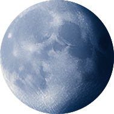

魚兒活躍指數
›
良好！魚群活躍
主要活躍期清晨7:31–上午10:01
次級活躍期清晨1:55–凌晨3:35
›
退潮中，明天再釣魚吧
0.19 m
下次乾潮時間
—下次乾潮高度
—下次滿潮時間
—下次滿潮高度
—天氣
›
資料載入中…
--°
↑ --°C
↓ --°C
↓ --°C
›
資料載入中…
-- m/s
›
資料載入中…
—級
— 公里/h
—°
›
資料載入中…
0
›
資料載入中…

↓
—
百帕
低高
月相
›
夜光亮度高，魚兒較挑食

 亮度-%
亮度-%
 月出-
月出-
 下次盈-天
下次盈-天
›
資料載入中…

下次日出：—